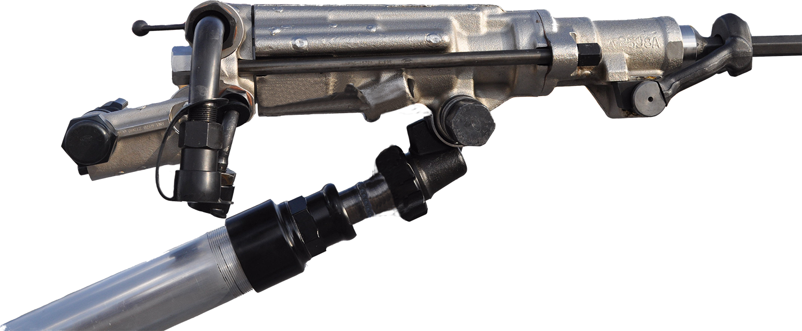

<div class="container">
    <div class="row">
        <div class="col-md-12 text-center">
            <h4><strong>Thunder Rock Drill RN-338</strong></h4>
            
            <p>

        </div>
        <div class="contender">
            <div class="col-md-12 coltext-center">
                <div class="col-md-12">
                    <table class="table table-striped table-hover">
                        <thead>
                            <tr>
                                <th>Especificaciones</th>
                                <th>US/IMP</th>
                                <th>Metrico</th>

                            </tr>
                            </tr>
                        </thead>
                        <tbody>
                            <tr>
                                <td>Diametro Del Cilindro</td>
                                <td>3.125"</td>
                                <td>79.38 mm</td>
                            </tr>
                            <tr>
                                <td>Carrera Del Piston</td>
                                <td>2.883"</td>
                                <td>73.25 mm</td>
                            </tr>
                            <tr>
                                <td>Carrera Util Del Piston</td>
                                <td>2.63"</td>
                                <td>64.69 mm</td>
                            </tr>
                            <tr>
                                <td>Frecuencia de Impacto</td>
                                <td>2250.0 g/m</td>
                                <td>2250.0 bpm</td>
                            </tr>
                            <tr>
                                <td>Longitud de la perforadora</td>
                                <td>27.0"</td>
                                <td>686.0 mm</td>
                            </tr>
                            <tr>
                                <td>Peso De La Perforadora</td>
                                <td>114.63 lbs</td>
                                <td>52.0 kg</td>
                            </tr>
                            <tr>
                                <td>Longitud Pie de Avance Contraido</td>
                                <td>67"</td>
                                <td>1702 mm</td>
                            </tr>
                            <tr>
                                <td>Consumo de Aire (90 PSI)</td>
                                <td>170.0 cfm</td>
                                <td>80.23 lts/sec</td>
                            </tr>
                            <tr>
                                <td>Tamaño De Barrena</td>
                                <td>7/8 x 4 1/4</td>
                                <td>22 mm x 108 mm</td>
                            </tr>
                            <tr>
                                <td>Revoluciones</td>
                                <td>225 RPM</td>
                                <td>225 RPM</td>
                            </tr>
                        </tbody>
                    </table>
                </div>
                


            </div>
        </div>
    </div>